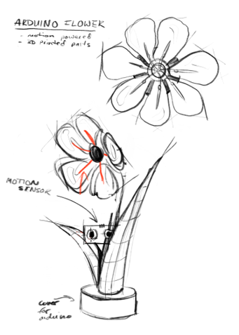
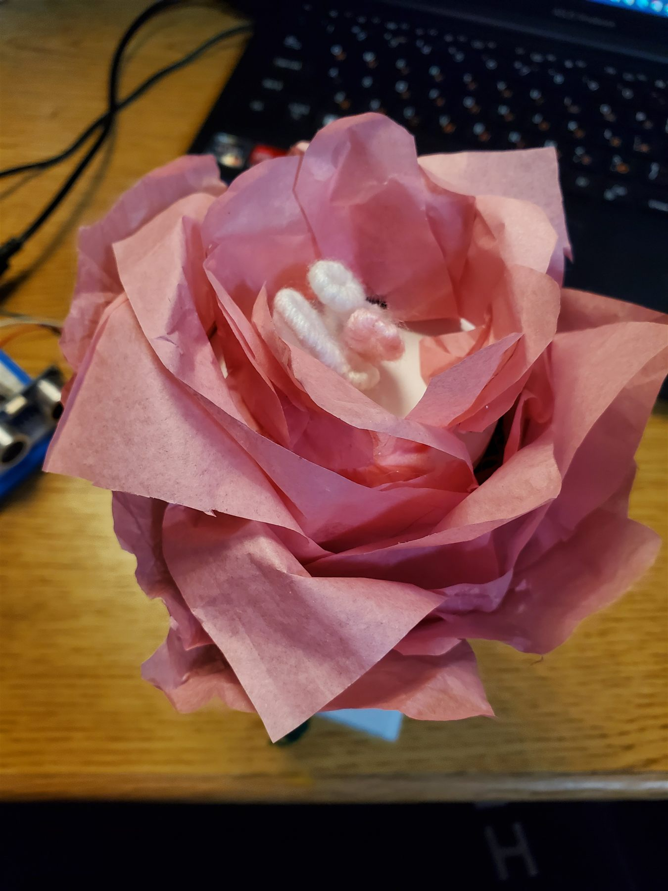
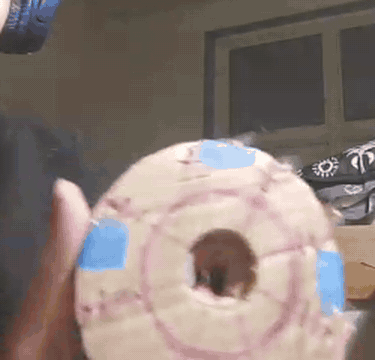
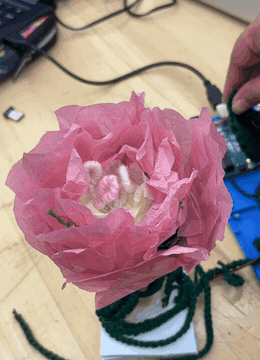

STEP 1
Draft
The sketch maps the petals, sensor, and base of the interactive concept.
BLOOMINO
Engineered art concept inspired by nature, fashion, and human-tech interaction.
Explore the concept
BLOOMINO / 01Prototype · engineered flowerThe first sketch explores a robotic flower that responds to user movement. The form pairs botanical elements made of tissue paper, crochet, and a 3D printed base with an integrated motion sensor and an Arduino microcontroller.
A small gesture can make technology feel more human.
Follow the Bloomino concept as it moves from an early drawing, through its mechanism, and out into the showcase.

The sketch maps the petals, sensor, and base of the interactive concept.

This first motion prototype was made from scrap materials found on hand, and later informed the CAD and Arduino designs for a functional art piece.

The operation demo brings the concept into a working project.

Bloomino was presented at the First Year Engineering Design Showcase at New Jersey Institute of Technology in February 2025.

The finished project is shared alongside the people who brought it together.